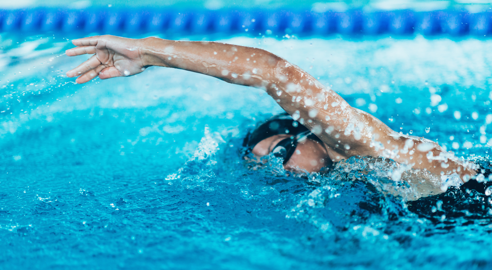
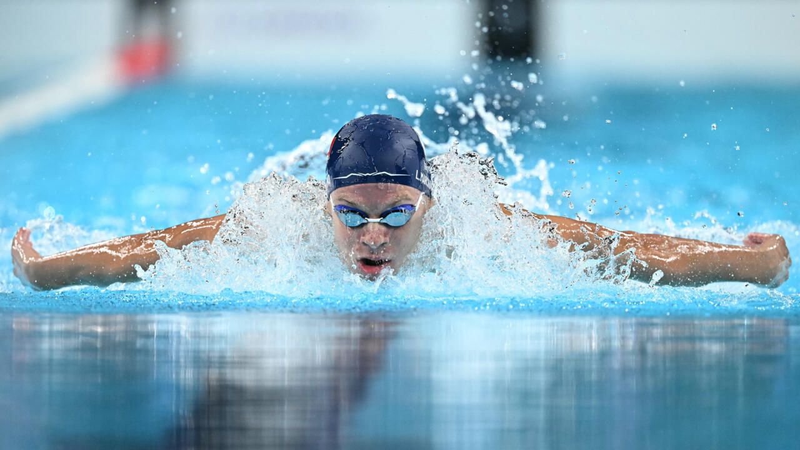
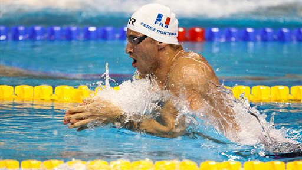
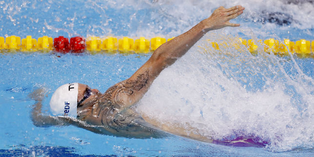

Le crawl est une nage où on avance sur le ventre. Les bras font un mouvement circulaire, l’un après l’autre : un bras sort de l’eau pendant que l’autre pousse dedans. Les jambes battent de haut en bas rapidement pour aider à avancer. Pour respirer, on tourne la tête sur le côté, en dehors de l’eau, pendant qu’un bras sort. C’est une nage rapide, souvent utilisée en compétition.

Le papillon se nage sur le ventre. Les deux bras bougent ensemble : ils poussent l’eau vers l’arrière, sortent en même temps de l’eau, puis reviennent par-dessus la tête. Les jambes font un mouvement de vague appelé "mouvement dauphin" : elles restent collées et bougent de haut en bas. Le corps ondule comme un serpent. On respire en sortant la tête de l’eau, souvent tous les deux ou trois mouvements de bras. C’est une nage rapide, mais difficile car elle demande de la force et une bonne coordination.

La brasse est une nage sur le ventre, souvent la première qu’on apprend. Les bras s’ouvrent en demi-cercle vers l’extérieur, puis reviennent ensemble sous la poitrine. Les jambes se plient, s’écartent, puis poussent l’eau comme un saut de grenouille. Entre chaque mouvement, le corps glisse un peu dans l’eau. La tête sort à chaque mouvement de bras, ce qui permet de respirer facilement. C’est une nage lente mais très utile pour apprendre à bien flotter.

Le dos crawlé se nage sur le dos, le ventre vers le ciel. Les bras bougent l’un après l’autre : pendant qu’un bras pousse l’eau sous l’eau, l’autre revient par-dessus en l’air. Les jambes battent vite et de façon régulière, comme au crawl. On garde le corps bien droit, sans trop bouger la tête. On peut respirer librement car le visage reste hors de l’eau. C’est une nage agréable et reposante une fois qu’on est à l’aise sur le dos.
